실습1. Launch Wizard for SAP
Lab 설명
이번 Lab은 Launch Wizard for SAP 을 이용하여 SAP HANA DB 를 실습 0에서 생성된 인프라 위해 설치 합니다. 이번 실습은 Single Node 로 구성 합니다.
필요에 따라 Multi Node, Cross AZ HA로 구성이 가능합니다.
Lab Architecture
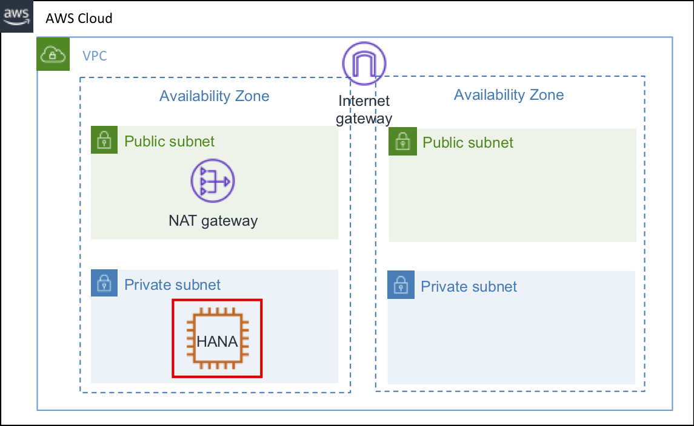
AWS Launch Wizard for SAP
AWS Launch Wizard for SAP을 통해 간단한 설정 및 클릭 만으로 SAP HANA DB를 설치할 수 있습니다
- AWS Management Console에 로그인 합니다. (Region : us-east-1)
- AWS Launch Wizard for SAP 접속합니다.
- Create deployment 버튼을 클릭합니다.
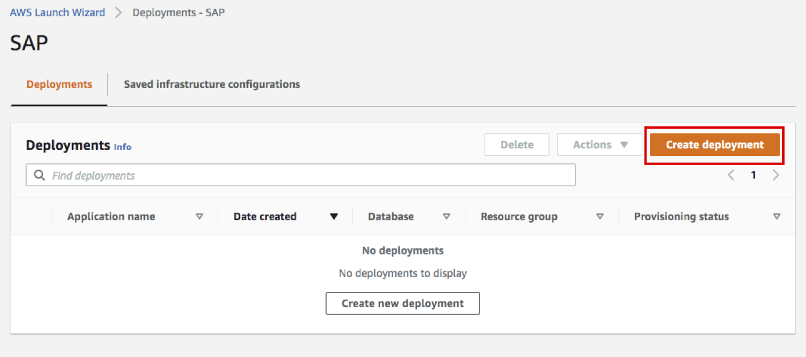
- Step 1. Choose Application을 SAP 로 선택한 뒤 Next를 클릭합니다.
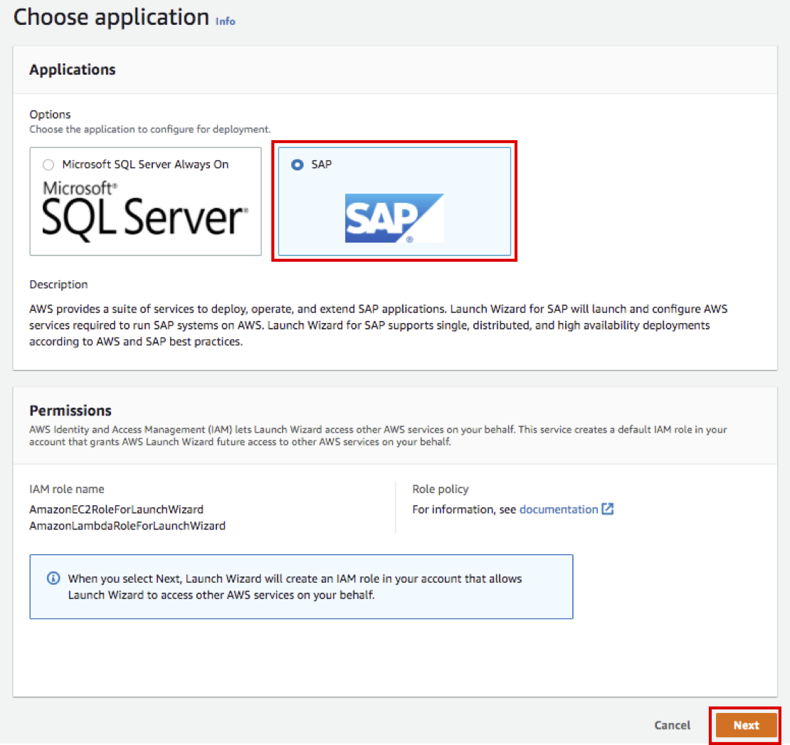
- Step 2. Define infrastructure 에 General 옵션을 아래와 같이 설정 합니다.
- Deployment name: SAPHANADev로 입력합니다.
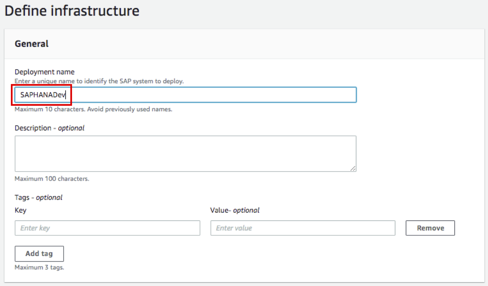
- Infrastructure - SAP landscape의 Configuration options 옵션을 아래와 같이 설정 합니다.
- Configuration Name : SAPHANADev
- Deployment environment : Non-Production 으로 변경
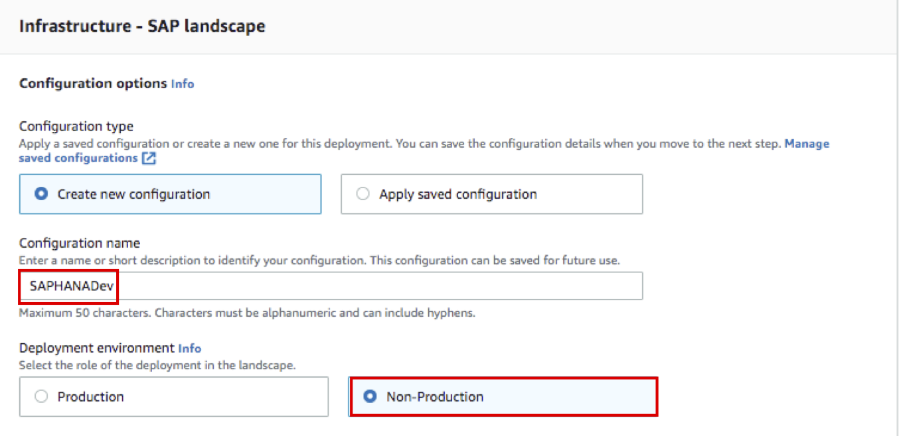
- Infrastructure - SAP landscape의 Configuration details 옵션을 아래와 같이 설정 합니다.
- Key pair name : Lab0에서 생성한 SAPImmersionDay Key Pair 선택
- Virtual Private Cloud(VPC) : Lab0에서 CloudFormation로 생성한 SAP ERP 선택
- Availability Zone (AZ) and private subnet : Lab0에서 CloudFormation로 생성한 Subnet 선택
- Availability Zone 1 : ap-northeast-2a, Private subnet 1 : SAP ERP Private Subnet(AZ1) 선택
- Availability Zone 2 : ap-northeast-2b, Private subnet 1 : SAP ERP Private Subnet(AZ2) 선택
- Verify connectivity : 체크박스 선택
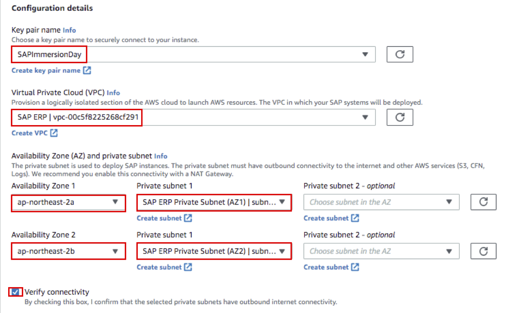
- Security groups 옵션을 아래와 같이 설정 합니다.
- Options 는 Launch Wizard에서 생성하는 Security Group 사용을 위해 Create new security group 설정을 유지 합니다.
- Connectivity to external systems or users 는 이번 실습은 불필요 하므로 Remove 합니다
- Time zone : UC 로 선택 합니다.
- 나머지 option은 Default 혹은 비워둡니다.
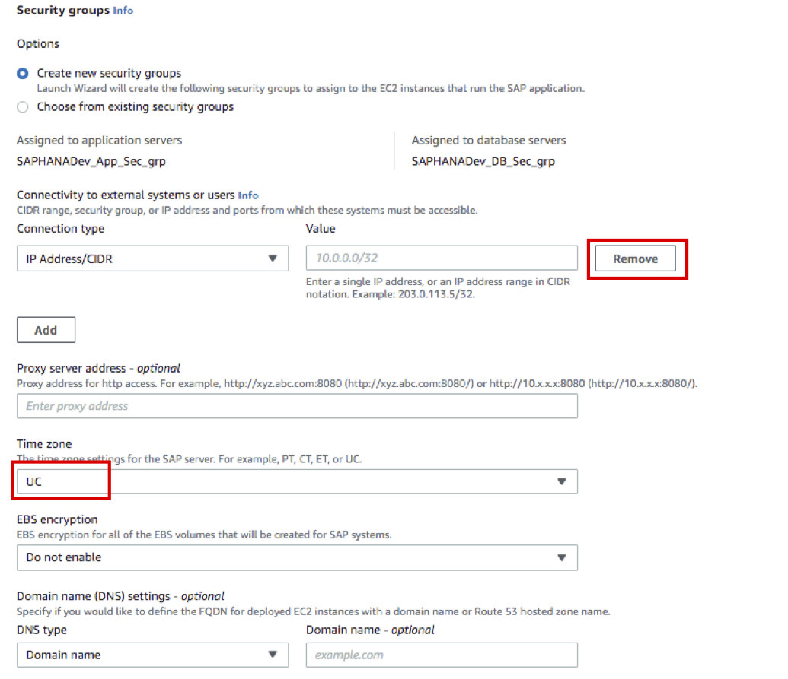
- SAP Landscape settings 옵션을 아래와 같이 설정 합니다.
- SAPSYS Group ID : 501 로 설정 합니다.(SAP System Admin의 OS Group ID)
- Simple Notification Service (SNS) topic ARN - optional 은 선택하지 않습니다.(이번 실습에는 Notification을 사용하지 않습니다.)
- Next 버튼을 클릭합니다
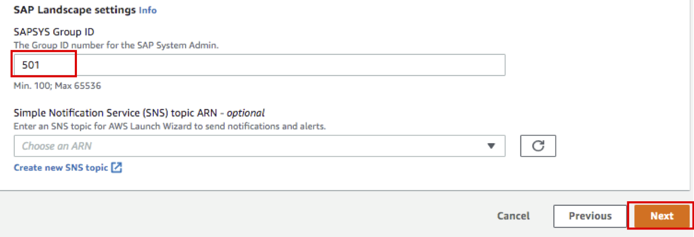
-
Save infrastructure configuration : No, continue saving 을 선택후 OK 버튼을 클릭 합니다.
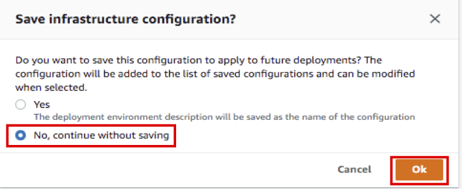
-
Step 3. Configure application settings 에 Application type 설정을 SAP HANA 로 선택 합니다.
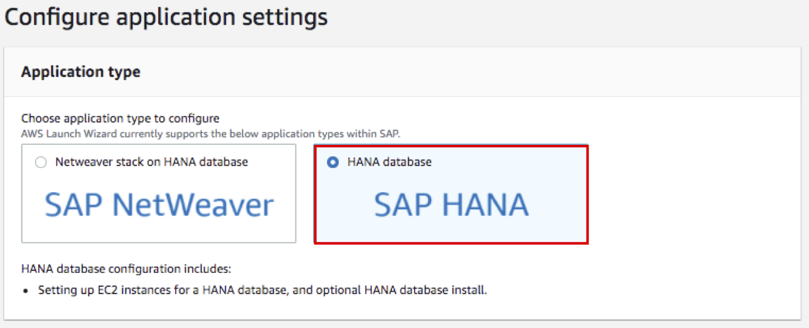
-
General settings - HANA 를 아래와 같이 설정 합니다.
- HANA System ID (HANASID) : HDB 입력
- HANA Instance number : 00 입력
- S3 location for HANA media : (SAP HANA 설치파일을 업로드한 버킷 Name 입력) (e.g s3://launchwizard-awssapcd/hanadb)
- HANA password : Init12345! (실습을 위해 HANA Master Password 통일)
- Next 버튼 클릭
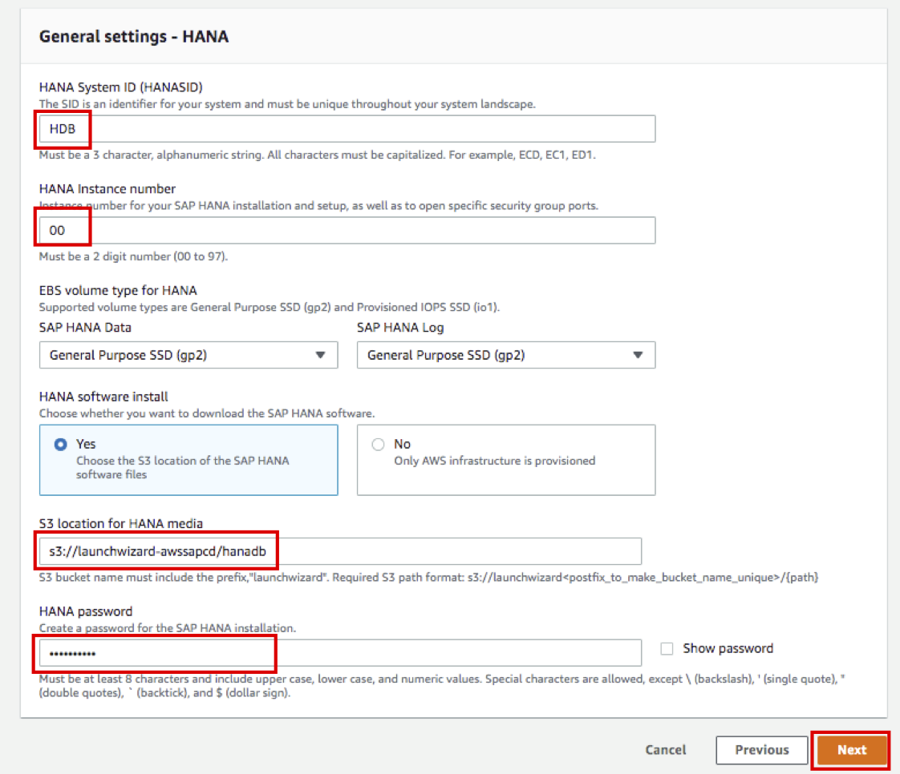
-
Step 4. Configure deployment model 의 Deployment details 을 Single instance deployment로 선택합니다.
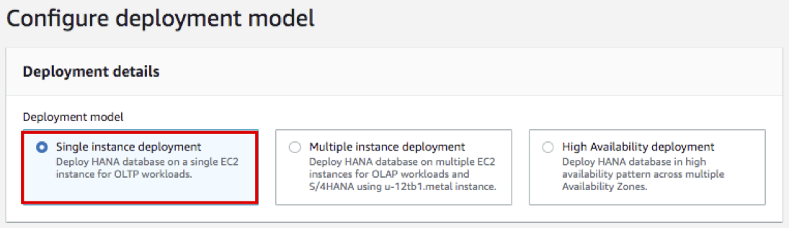
-
Settings for HANA database on one instance 을 아래와 같이 설정 합니다.
- Operating system and version : SuSE-Linux-15-HVM 로 선택합니다.(HA 구성이 아니므로 Subscription 선택이 불 필요함.)
- Host name : hdbmas 로 설정합니다.
- Memory: 122 로 변경 합니다.(SAP HANA on AWS certifications 인스턴스 최소 Spec을 맞추기 위해 변경)
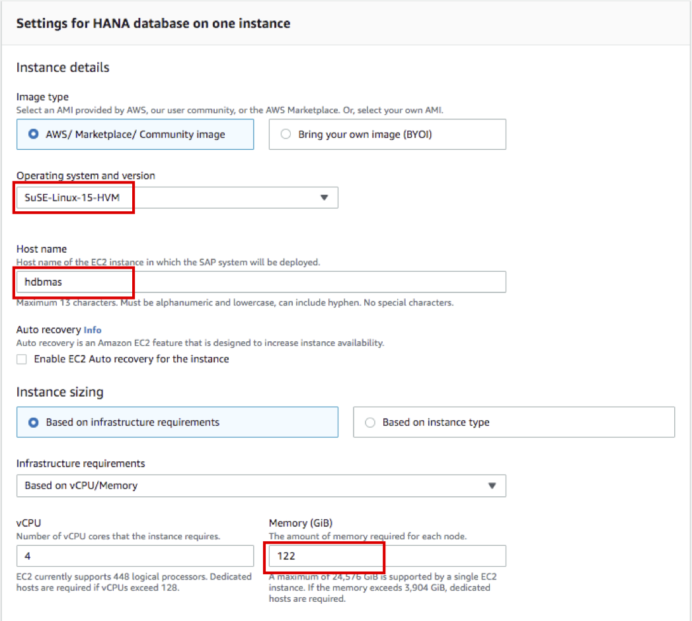
-
Recommended resources 결과를 확인 후 Next 버튼을 클릭 합니다.
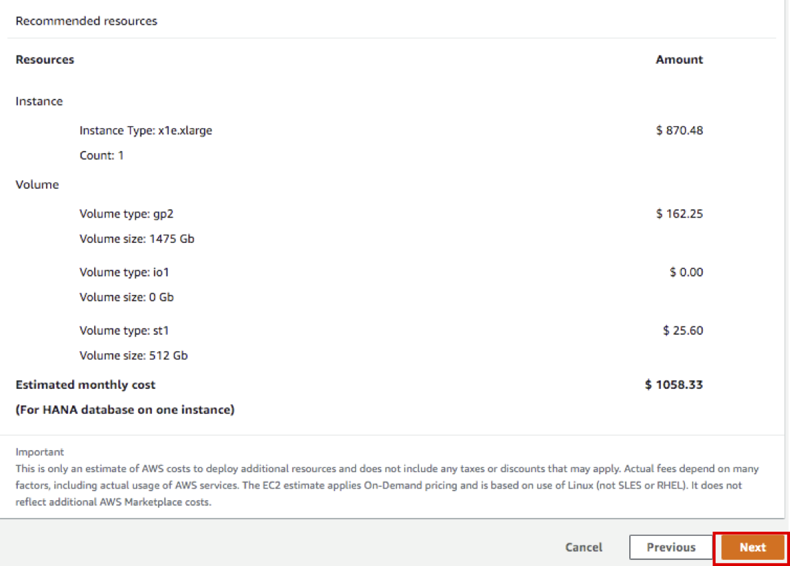
-
Step 5. Review 에서 이전 스텝에서 설정한 옵션을 확인 하고, Deploy 버튼을 클릭 합니다.
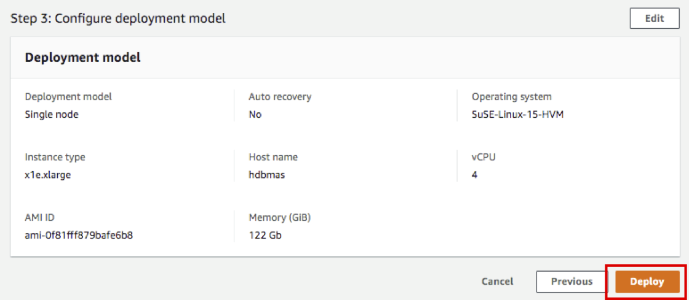
-
Deploy 된 SAPHANADev Application 의 Provisioning Status 를 확인 합니다.
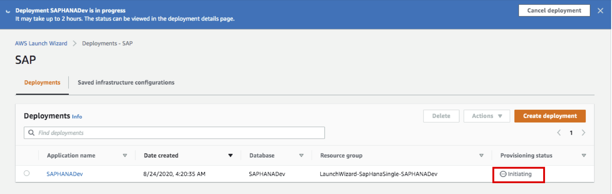